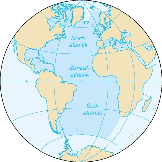

Auf den Punkt
Der Atlantische Ozean, auch Atlantik genannt, ist nach dem Pazifik der zweitgrößte Ozean der Erde. Als Grenzen gelten die Polarkreise und die Meridiane durch Kap Agulhas im Osten und Kap Hoorn im Westen. Die von ihm bedeckte Fläche beträgt 79.776.350 km², mit den Nebenmeeren 89.757.830 km² und mit dem Arktischen Ozean 106,2 Millionen km², insgesamt etwa ein Fünftel der Erdoberfläche. Dabei liegt die durchschnittliche Wassertiefe (bei Einschluss aller Nebenmeere) bei 3.293 Metern.
Atlantik Part 1
Der Name geht auf den Begriff Atlantis thalassa der altgriechischen Sprache zurück: Ἀτλαντὶς θάλασσα ‚Meer des Atlas‘.
In der griechischen Mythologie glaubte man, dass die Welt hinter den Säulen des Herakles, westlich der Straße von Gibraltar, ende. Dort stützte der Titan Atlas (griechisch Ἄτλας ‚Träger‘) das Himmelsgewölbe am westlichsten Punkt. Ihm zu Ehren wurde der Ozean benannt.
Atlantik Part 2
Der Atlantik entstand im Mesozoikum durch die Teilung der erdgeschichtlichen Kontinente Laurasia im Norden und Gondwana im Süden. Heute trennt er Europa und Afrika vom amerikanischen Kontinent. Der Mittelatlantische Rücken überragt den Tiefseeboden um bis zu 3000 Meter und trennt die west- von der ostatlantischen Senke des Ozeans.
Atlantik Part 3
Der Atlantische Ozean liegt fast ausschließlich auf der Westhalbkugel der Erde. Er ist umgeben von der Arktis im Norden, Europa im Nordosten, Afrika und dem Indischen Ozean im Osten, der Antarktis im Süden, Südamerika im südlichen und Nordamerika im nördlichen Westen. Der Atlantik kann entlang des Äquators in Nord- und Südatlantik unterteilt werden; gelegentlich wird er auch entlang der Wendekreise in Nord-, Zentral- und Südatlantik unterteilt.
Atlantik Part 4
Der Atlantik birgt ein Wasservolumen von rund 354,7 Mio. km³. Seine größte Breite beträgt 9000 km zwischen Senegal und dem Golf von Mexiko, die geringste 1500 km zwischen Norwegen und Grönland.Die maximale Tiefe wird mit etwa 8.400 Metern im Milwaukeetief erreicht, einem Teil des Puerto-Rico-Grabens. Der Golfstrom, der aus der Karibik kommt und quer über den Atlantik bis nach Grönland zieht, ist für das relativ milde Klima an den nordeuropäischen Küsten verantwortlich. Wegen des intensiven Schiffsverkehrs auf den Nebenmeeren (u. a. Mittelmeer, Nord- und Ostsee) und des Transitverkehrs zwischen Europa und Nordamerika ist der Atlantik das verkehrsreichste Weltmeer.
Auf den Punkt Part 2
Im 15. Jahrhundert begann die Europäische Expansion mit den Entdeckungsfahrten der Portugiesen nach Afrika und der Spanier nach Amerika. Erst nach Eröffnung des Sueskanals im November 1869 wurde es möglich, durch das Mittelmeer nach Persien, Indien oder Asien zu fahren. Bis dahin mussten die Schiffe das Kap der Guten Hoffnung umrunden. Der Atlantik ist nach wie vor der meistbefahrene Ozean.